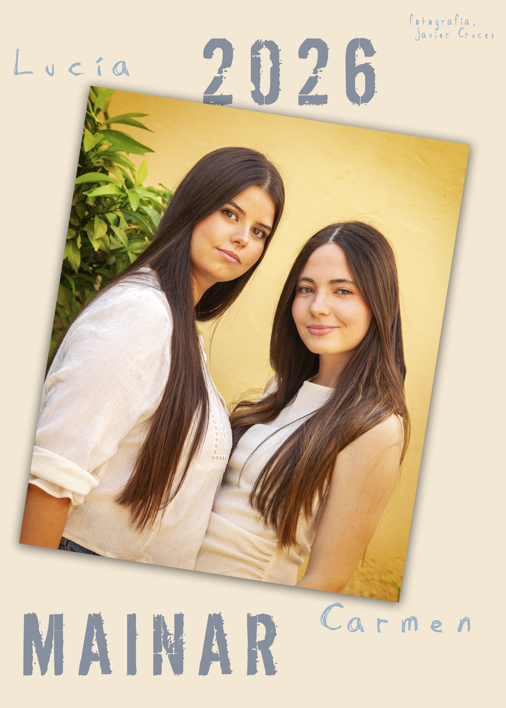

Fiestas de Mainar 2026
Queridos vecinos y vecinas de Mainar.
Comisión de fiestas, amigos, familiares y visitantes.
Un año más llegan las fiestas más esperadas del año. Queremos agradecer a la comisión de fiestas por confiar en nosotras. Es un orgullo poder representar a un pueblo tan increíble como Mainar.
Empiezan unos días muy bonitos y esperamos que disfrutéis de todas las actividades que la comisión ha preparado con tanta ilusión. Por ello, es importante recordar que las fiestas las hacemos entre todos, y que la colaboración de cada uno es clave para que todo salga bien y poder disfrutar al máximo.
También queremos destacar los actos religiosos que año tras año, forman parte de nuestras tradiciones y de la esencia de nuestras fiestas.
Deseamos que sean unas fiestas maravillosas, llenas de buenos momentos y recuerdos que nos acompañen todo el año.
¡VIVA MAINAR!
¡VIVA LA VIRGEN DE LA ASUNCIÓN!
¡VIVA SAN ROQUE!
Saludos de las Reinas.
Carmen & Lucía